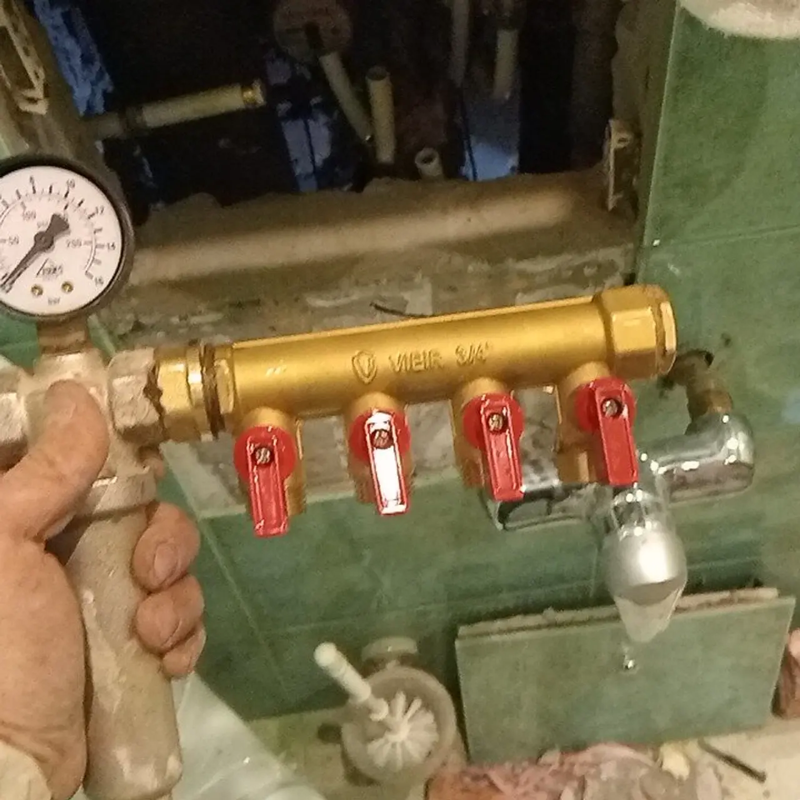
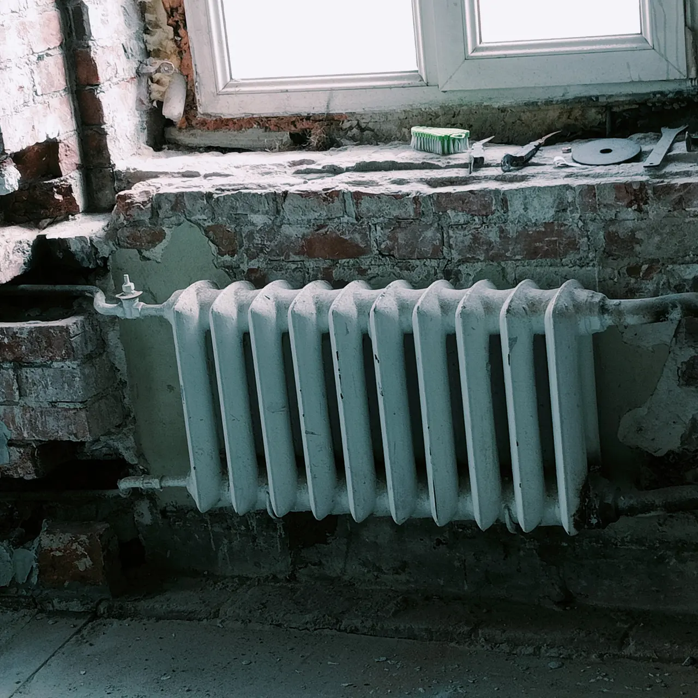
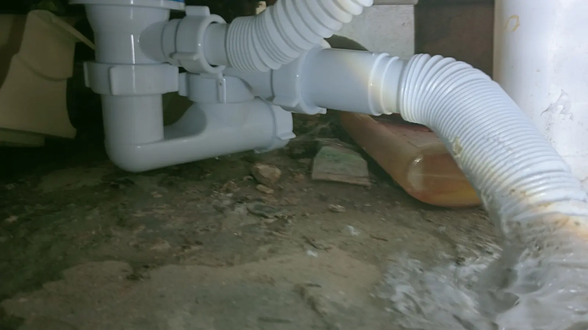
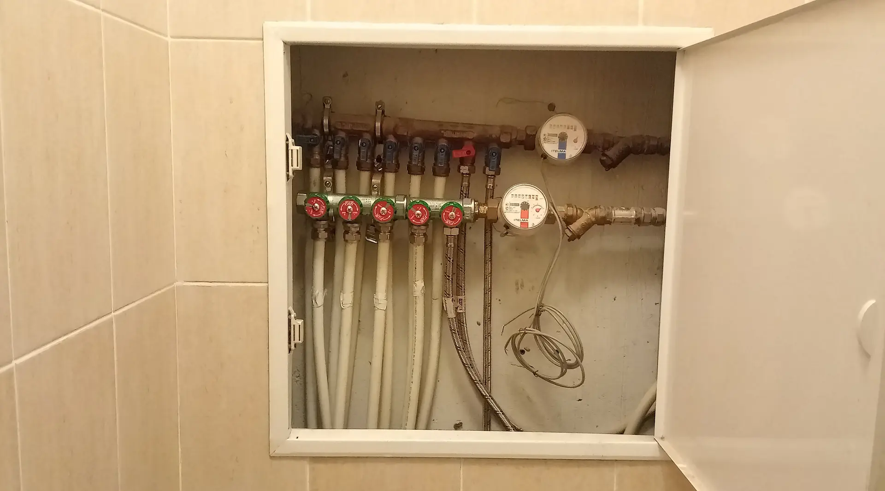
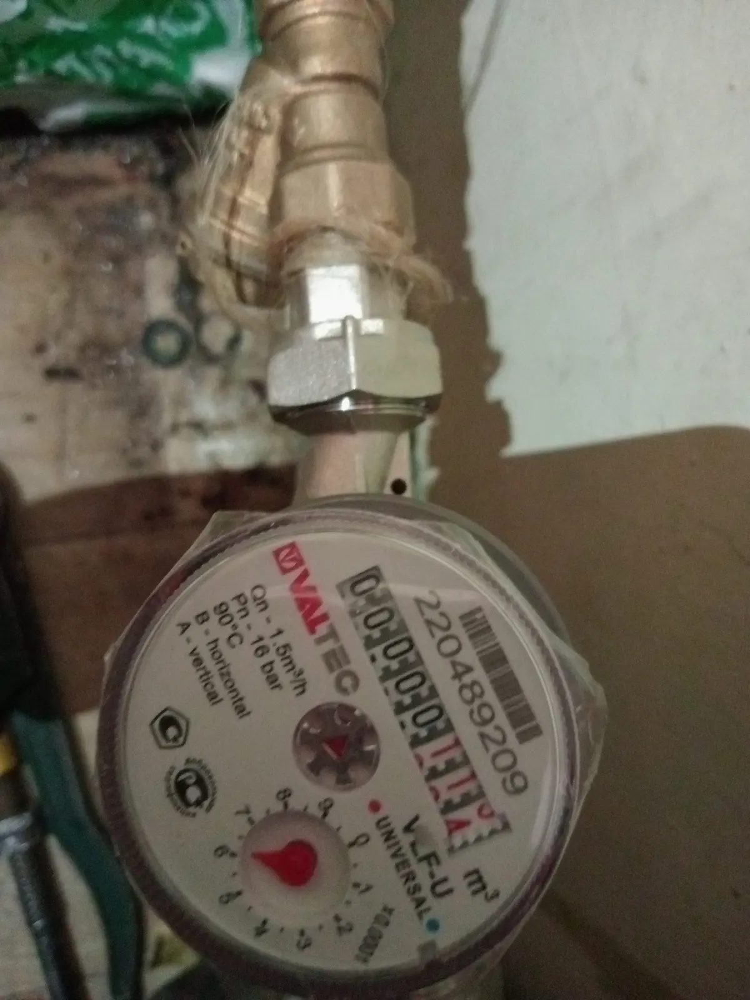
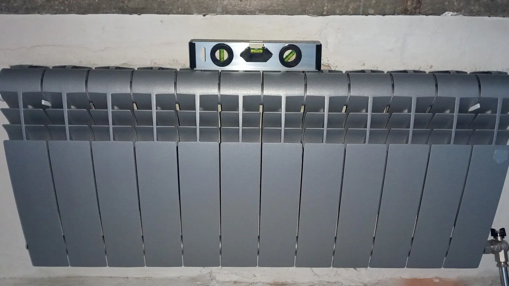

Сантехник и электрик на дом в Москве
Течь, засор, смеситель, розетка – мелкий и срочный ремонт. Работаем круглосуточно, мастер приезжает с инструментом.
Что клиенты пишут про визит
Приехал в течение двух часов
«Давид без лишних вопросов, без траты моих нервов, приехал в течение 2-х часов, починил бочок и уехал.» – Юлия Иванова.
Лишнего не возьмёт
«Лишнего не возьмет, время прихода оговаривается.» – Кирилл. Согласуете время при заявке.
После работы чисто
«За собой оставил рабочее место в чистоте.» – Светлана Шадрина.
Напишите в WhatsApp или позвоните: что случилось, адрес и удобное время. Стоимость называют при заявке.


Вы написали, что случилось
Что сломалось, адрес и удобное время – этого достаточно. Время приезда и стоимость согласуют сразу.
Мастер приезжает с инструментом
Клиенты пишут: «весь инструмент принёс с собой», а нужные детали мастер помогает выбрать и купить.
Сделал и убрал за собой
Сантехника или электрика – по вашей заявке. Если нашлось что-то ещё, мастер скажет об этом сам.
Цены на работы
Цены из прайса на карточке в Яндекс Картах. Где цены на карточке нет – она называется при заявке.
Сантехника
- Заменить смеситель или кранКухня, ванная, краны на подводкеуточнить
- Установить раковину или унитазС подключениемуточнить
- Прочистить засорРаковина, ванна, унитазуточнить
- Подключить стиральную машинуИ другие приборыуточнить
- Заменить канализацию, чугун на пластикПод ключ; цена с карточки, зависит от объёмаот 90 000 ₽
Электрика и отопление
- Установить розетку или выключательДемонтаж и монтаж500 ₽
- Заменить радиатор или батареюСо сливом и подключениемуточнить
- Заменить счётчик водыС установкойуточнить
Часть цен на карточке пока не указана. Стоимость называют после описания работы или осмотра.


Что важно знать
- КруглосуточноЧасы работы на карточке в Яндекс Картах.
- Сантехника и электрикаПо отзывам: смесители, раковины, засоры, батареи, люстры и розетки – у одного мастера.
- Приезжает с инструментомКлиенты пишут: весь инструмент принёс с собой, чеки на материалы предоставил.
- После работы чисто«За собой оставил рабочее место в чистоте.»
Что пишут на Яндекс.Картах
-
«Рекомендую!! Давид без лишних вопросов, без траты моих нервов, приехал в течение 2-х часов, починил бочок и уехал. Стоимость поразила своей адекватностью.»
-
«Давид - профи. Знает свое дело, слышит клиента, всегда ищет возможность сделать все и хорошо, и оперативно. Стоимость услуг адекватная.»
-
«Если Вам нужен мелкий, а главное срочный ремонт по разным бытовым поломкам - можете смело обращаться. Лишнего не возьмет, время прихода оговаривается.»
Отзывы скопированы с карточки на Яндекс.Картах без правок.
Напишите, что случилось
Что сломалось, адрес и удобное время. Время приезда и стоимость согласуют сразу.
Можно написать в WhatsApp или позвонить – как удобнее.